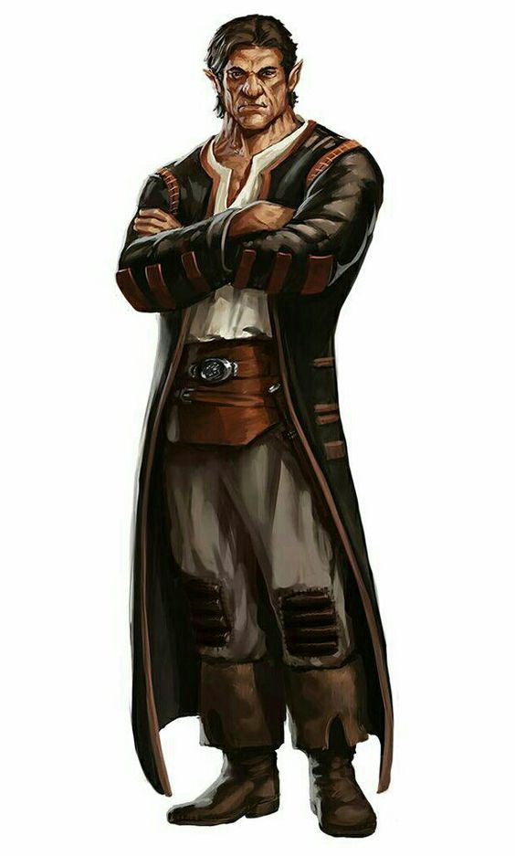

O COMANDANTE MHURREN DESPERTOU A SI E A SUA MULHER das sua cama de peles, colocou a curta cota de malha de aço em seu torso grosso e musculoso.
Normalmente ele acorda antes da maioria dos guerreiros, já que ele possui uma forte veia de sangue humano e acha a luz do dia menos irritante
que a maioria do resto da tribo. Entre os Caveiras Sangrentas, um guerreiro é julgado por sua força, ferocidade e tenacidade.
A ancestralidade humana não é motivo para vergonha – desde que ele seja tão forte, resistente e sedento por sangue quanto os de sangue puro.
Meio-orcs que sejam mais fracos que seus camaradas orcs não duram muito tempo entre os Caveiras Sangrentas ou em qualquer outra tribo orc que seja.
Mas, é considerado verdade que uma pitada de sangue humano concede a um guerreiro a mistura exata de esperteza, ambição e autodisciplina para ir além,
como Mhurren fez. Ele era senhor de uma tribo que reuniu duas mil lanças e era o mais forte comandante em Thar.
–Richard Baker, Lâmina Arcana
Quer estejam unidos sob a liderança de um poderoso bruxo ou estejam lutando por um impasse após anos de conflito, tribos orcs e humanas as vezes
formam alianças, unindo forças em uma vasta horda para o pavor das terras civilizadas próximas. Quando essas alianças são seladas através do casamento,
os meio-orcs nascem. Alguns meio-orcs crescem e se tornam orgulhosos comandantes de tribos orcs, seu sangue humano concedem a eles um diferencial
perante seus rivais orcs de sangue puro. Alguns arriscam sair pelo mundo para provar seu valor entre os humanos e outras raças mais civilizadas.
Muitos desses se tornam aventureiros, adquirindo renome pelos seus poderosos feitos e notoriedade por seus costumes bárbaros e fúria selvagem.
CICATRIZES E FORÇA
A pigmentação acinzentada dos meio-orcs, suas testas avantajadas, mandíbulas salientes, dentes proeminentes e corpos grandes torna sua herança orc
notável para todos os observadores. Meio-orcs tem entre 1,80 metro e 2,10 metros e, normalmente pesam entre 90 kg e 125 kg. Orcs ostentam cicatrizes
de batalha como peças de orgulho e consideram cicatrizes ornamentais como coisas bonitas. Outras cicatrizes, no entanto, marcam um orc ou meio-orc
como um ex-escravo ou um exilado desonrado. Qualquer meio-orc que tenha vivido entre ou próximo dos orcs terá cicatrizes, independentemente de serem
marcas de humilhação ou de orgulho, recontando suas façanhas e ferimentos do passado. Até mesmo um meio-orc que viva entre os humanos deverá mostrar
essas cicatrizes orgulhosamente ou escondê-las com vergonha.
A MARCA DE GRUUMSH
Gruumsh, o deus caolho, criou os orcs e, até mesmo os orcs que desistem de adorá-lo não consegue escapar totalmente de sua influência.
O mesmo acontece com os meio-orcs, apesar do seu sangue humano tem moderar o impacto da sua herança orc. Alguns meio-orcs ouvem os sussurros
de Gruumsh em seus sonhos, influenciando-os a liberar a fúria que fervilha dentro deles. Outros poucos exultam o nome de Gruumsh
quando participam de um combate corpo-a-corpo – quer exultem com ele ou temam de medo e ódio. Meio-orcs não são maus por natureza,
mas o mal espreita dentro deles, quer eles o abracem ou se rebelem contra ele. Além da fúria de Gruumsh, meio-orcs sentem poderosas emoções.
A fúria não apenas acelera seu pulso, mas faz seus corpos arder. Um insulto é como uma picada ácida e a tristeza drena sua força. No entanto,
eles riem alto e forte e, simples prazeres mundanos – banquetear, beber, lutar, tocar tambores e dançar selvagemente – enche os seus corações de alegria.
Eles tendem a ter temperamento explosivo e, as vezes, são rabugentos e mais inclinados a ação que contemplação e a lutar que argumentar.
Os meio-orcs mais adaptados são aqueles com autocontrole suficiente para viver em terras civilizadas.
TRIBOS E PARDIEIROS
Os meio-orcs geralmente vivem entre os orcs. Entre as outras raças, os humanos são os mais receptivos e a maioria dos meio-orcs sempre vivem entre
em terras humanas quando não vivem em tribos orc. Quer seja provando seu poder em tribos bárbaras, quer seja tentando sobreviver em favelas em grandes
cidades, os meio-orcs se firmam através de sua força física, sua resistência e da pura determinação que herdaram de seus ancestrais humanos.